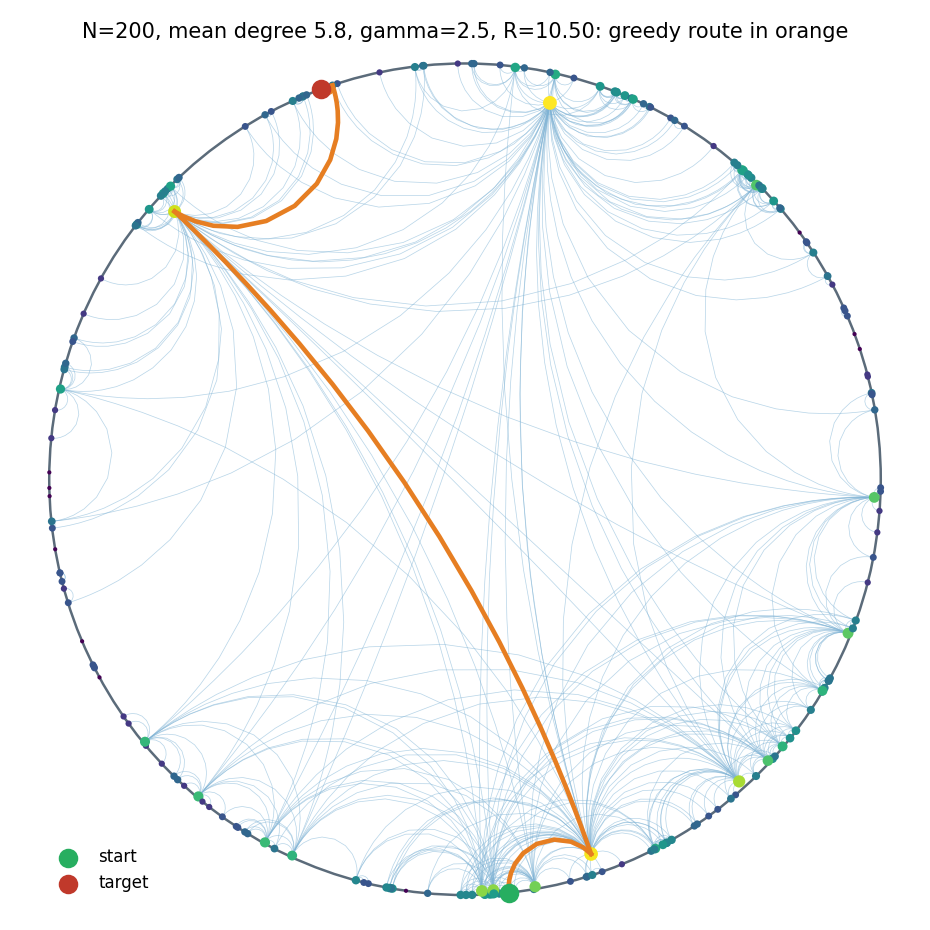
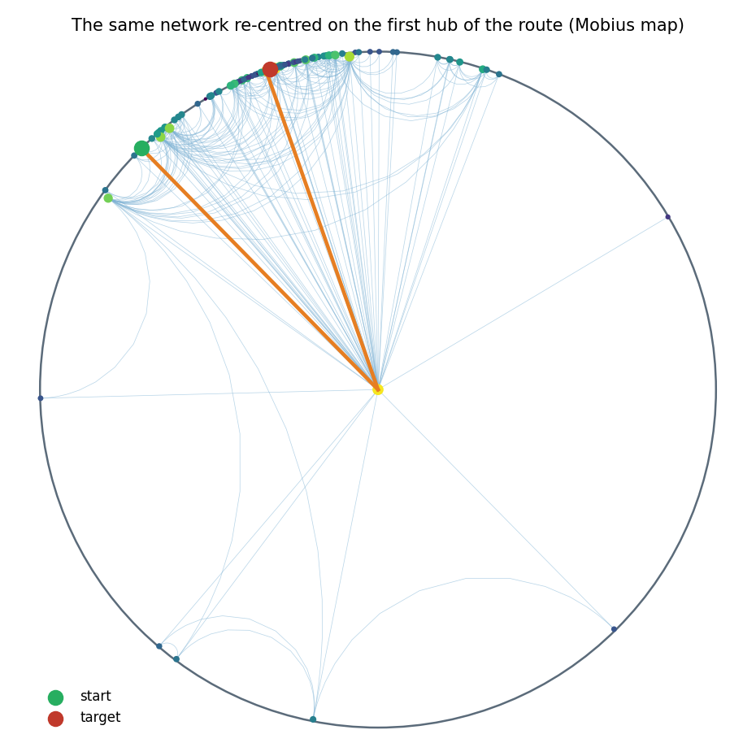
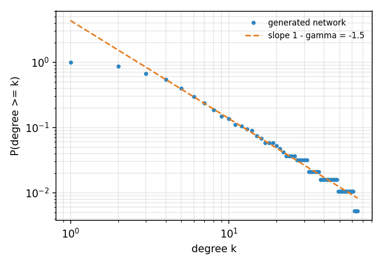

Design and plan, version 1, 4 October 2026. Proposal for the lead; not part of the Master Plan yet.
Based on: D. Krioukov, F. Papadopoulos, M. Kitsak, A. Vahdat, M. Boguñá, Hyperbolic Geometry of Complex Networks, Phys. Rev. E 82, 036106 (2010), arXiv:1006.5169. Prototype and figures: hypernet.py in this folder.
What. An exhibit that shows a real-looking network (an "Internet" of 200 nodes) living in the hyperbolic plane. The visitor sees:
Why it fits ATLAS:
Three views, cheapest first:
| View | Where | What the visitor does | New code |
|---|---|---|---|
| V1 Station disc | Console web page and Spectator | Watches the network in the Poincaré disc; a greedy route animates hop by hop | Small: Python generator + one JS page |
| V2 Floor map | Headset, in Home, standing | A 2.4 m Poincaré disc lies on the floor; looking at a node re-centres the world on it (focus + context) | Medium: one blade, flat meshes |
| V3 Walk the network | Headset, in Curved Walk (S2) | Stands at a node in true hyperbolic space; beacons point along the real geodesics to its neighbours; "hops" carry the packet | Large: tile placement, beacons, hops |
Recommendation:
Measured on the prototype (N = 200, mean degree 5.8, γ = 2.5, T = 0, seed 7, 2,000 random pairs):
| Greedy routing using | Success | Mean hop stretch |
|---|---|---|
| Hyperbolic distance | 100 % | 1.00 (every route as short as the shortest path) |
| Straight-line distance in the Poincaré picture | 74 % | 1.03 |
This is the headline the exhibit can show live: the same network, the same rule ("step closer"), and only the geometry changes.
| Fact | Flat plane | Hyperbolic plane |
|---|---|---|
| Circumference of a circle of radius r | 2πr (grows linearly) | 2π sinh r ≈ π e^r (grows exponentially) |
| Nodes of a tree at depth r, b children each | b^r (exponential) | b^r fits without crowding |
Real networks are roughly tree-like. ISPs sit above regional networks, which sit above local ones; communities sit above sub-communities. A tree needs exponentially growing room, which only hyperbolic space has.
The paper places nodes in a hyperbolic disc and links the ones that are close. From that one rule, three things follow:
Radius means popularity; angle means similarity. Shortest paths dip towards the centre and back out, like going up to a common ancestor in a tree.
| Moment | The visitor sees | The "aha" |
|---|---|---|
| Hubs | Three or four big nodes near the centre, most nodes on the rim | "The rich are in the middle and connected to everyone" |
| Room at the edge | Re-centre on any node: its neighbourhood opens up and the rest shrinks to the rim | "There is always room for more branches" |
| Two Compasses for networks | The same packet delivered twice: hyperbolic greedy arrives; flat-picture greedy gets stuck | "The geometry is what makes the map-free rule work" |
| Live number | Success rate and stretch over many random packets | Every claim backed by a number (rubric: geometric creativity 30 %, correct maths) |
Comparison with the rubric:
All formulas use ζ = 1, so one unit of hyperbolic distance is one curvature radius. In ATLAS that unit is L metres, the room's loop-fit: L5 = 1.88 m in sample_3x3.
| Quantity | Formula | Source |
|---|---|---|
| Exponent of the radial density | α = (γ − 1) / 2 | eq. 29 with ζ = 1 |
| Helper | ξ = α / (α − 1/2) | eq. 25 |
| Scale | ν = π k̄ / (2 ξ²) at T = 0; ν = k̄ sin(πT) / (2 T ξ²) for 0 < T < 1 | eqs. 25, 31; hot case of §VII |
| Disc radius | R = 2 ln(N / ν); for γ = 3 this is R = 2 ln(8N / (π k̄)) | eq. 13 |
| Radius of a node | r = arccosh(1 + u (cosh αR − 1)) / α, with u uniform in [0, 1] | exact inverse of the CDF of eq. 17 |
| Angle | θ uniform in [0, 2π) | |
| Distance | cosh x = cosh r cosh r′ − sinh r sinh r′ cos Δθ, with Δθ = π − abs(π − abs(θ − θ′)) | eq. 5 |
| Link, T = 0 | linked if x < R | eq. 8 |
| Link, T > 0 | p(x) = 1 / (e^((x − R) / (2T)) + 1) | eq. 41 |
| Greedy forwarding | next = the neighbour with the smallest x to the target; drop when no neighbour is closer | §X |
| Poincaré disc point | ρ = tanh(r / 2), at angle θ | conformal model |
| Re-centring on point a | z → (z − a) / (1 − ā z) | Möbius isometry of the disc |
| In the ATLAS kernel frame | P = (sinh r cos θ, sinh r sin θ, cosh r), metric diag(1, 1, −1), κ = −1 | lane B contract; Geometry2.Distance |
Default parameters: N = 200, k̄ = 6, γ = 2.5 (the Internet is about 2.1), T = 0 (the hot case adds randomness). These give R = 10.5 units.

Figure 1. The prototype network in the Poincaré disc. Edges are drawn as true geodesics. Node size and colour follow degree. The orange line is a greedy route: from a rim node, through two hubs, to a far rim node, in 4 hops.

Figure 2. The same network re-centred on the first hub of the route by a Möbius isometry. Distances are unchanged; only the point of view moves. This is the V2 interaction.

Figure 3. The share of nodes with degree ≥ k on log-log axes. The tail follows the power law of slope 1 − γ (one hub has degree 65; the mean is 5.8).
Experience:
How:
station/pipelines/atlas_pipelines/network.py generates the network. It ports hypernet.py into the existing atlas_pipelines package, next to airway.py.network_<seed>.json (section 6.3) and runs the routing study offline.station/hub/wwwroot/js/network.js draws geodesics as sampled arcs (the method of hypernet.geodesic_disk) on a canvas, in the style of mapview.js.Reuses: the Hub's static file serving, the Console layout and mapview.js drawing helpers; on the Spectator, Telemetry/Map/FlatTwinDisc.cs (the Poincaré disc already drawn for S2).
Cost: no phone code and no frame budget. This is the lowest-risk way to show the idea to judges.
Experience:
Why standing:
How:
Blades/Network/Core/:NetworkModel (load the JSON, distances);PoincareMap (project, Möbius re-centre, ease between two centres);GreedyRouter.NetworkFloorView builds node posts and edge strips with AtlasMeshBuilder, colours from AtlasPalette, materials from MaterialPool;GazeRegistry (at most 64 at once: the nodes nearest the centre after projection);Budget:
Experience:
AirwayBeacon.How:
TileGraph.Neighbour, choosing the neighbour whose centre is nearest P). The node's offset inside that tile goes into the tile chart, as the airway is placed in AirwayTreeBinding.NetworkWingHost is registered with Curved Walk like AirwayWingHost.HolonomyWalkerKernel), the same machinery as Return Home.Why it is a stretch goal: see section 5.
In ATLAS one hyperbolic unit is L metres (1.88 m in a 3 × 3 m room). The disc radius grows only logarithmically with N, so even small networks are far too wide to walk:
| Network | R (units) | R in a 3 × 3 m room | Rim to rim through the centre |
|---|---|---|---|
| N = 200, k̄ = 6 | 10.5 | 19.8 m | about 40 m |
| N = 100, k̄ = 6 | 9.1 | 17.2 m | about 34 m |
| N = 60, k̄ = 5 | 8.5 | 15.9 m | about 32 m |
| N = 30, k̄ = 4 | 7.5 | 14.2 m | about 28 m |
Further facts:
Consequence:
Station PC Phone
---------- -----
atlas_pipelines/network.py StreamingAssets/networks/network_<seed>.json
generate (N, k̄, γ, T, seed) --bundle--> (built in; no Station needed)
greedy study (hyperbolic vs flat) |
write network_<seed>.json v
| Blades/Network/Core (engine-free)
v NetworkModel, PoincareMap, GreedyRouter
Hub /api/network -----------------------------> |
Console network.js (V1) v
Spectator FlatTwinDisc (V1) Blades/Network (views)
V2 NetworkFloorView in Home
^ V3 NetworkWingHost in Curved Walk
| events net.* and State
+----------------------------------------- LinkClient (unchanged)| Path | What | Lane |
|---|---|---|
station/pipelines/atlas_pipelines/network.py + tests/test_network.py | Generator, greedy study, JSON writer (port of hypernet.py) | D |
station/hub/wwwroot/js/network.js, Console tab "Network" | V1 drawing and packet animation | D |
ATLAS/Assets/Atlas/Blades/Network/Atlas.Blades.Network.asmdef | New blade assembly; references Atlas.World, Atlas.Kernel, Atlas.Rendering, Atlas.Input, Unity.Mathematics | A or C |
Blades/Network/Core/NetworkModel.cs, PoincareMap.cs, GreedyRouter.cs | Engine-free core (no UnityEngine type) | A or C |
Blades/Network/NetworkFloorView.cs, NetworkTwins.cs | V2 meshes and gaze targets | A or C |
Blades/Network/Walk/NetworkWingHost.cs, NetworkBeaconView.cs | V3 (stretch) | B |
Tests/Network/* | EditMode tests, run by tools/headless/verify.py too | all |
Rules this design keeps (contracts F1 to F9; verification brief §1):
ISpaceModule and the Lung's host pattern.MaterialPropertyBlock (F7): meshes use the shared AtlasVertex layout and MaterialPool.network.json{
"schema": "atlas.network/1",
"model": { "n": 200, "kbar": 6, "gamma": 2.5, "T": 0, "seed": 7, "zeta": 1, "R": 10.504 },
"nodes": [ { "id": 0, "r": 9.84, "theta": 1.23, "degree": 4, "label": "AS-0" } ],
"edges": [ [0, 17], [0, 42] ],
"study": {
"pairs": 2000,
"hyperbolic": { "success": 1.0, "stretch": 1.0 },
"flat_picture": { "success": 0.741, "stretch": 1.026 }
}
}| Kind | Name | Values | Purpose |
|---|---|---|---|
| Parameter | net.file | enum of bundled networks | Which network is shown |
| Parameter | net.view | floor, walk | V2 or V3 |
| Parameter | net.rule | hyperbolic, flat | Routing rule shown |
| Parameter | net.recentreSeconds | 0.3 to 1.5 (0.6) | Re-centre animation length |
| Parameter | net.maxGazeNodes | 16 to 64 (64) | Gaze targets registered at once |
| Event | net.recentre | {node, r, degree} | Each re-centre |
| Event | net.packet | {src, dst, rule, hops, shortest, stretch, success} | Each delivered or dropped packet |
| Event | net.hop (V3) | {from, to, distance} | Each hop |
| Twins | Re-centre | gaze dwell on the node / stick cursor + A | Rule 5 of the Master Plan |
| Twins | Send packet | gaze dwell on the packet chip / Y | |
| Twins | Switch rule | gaze dwell on the rule chip / X |
Parameters are declared with [AtlasParam], so the Console tuner shows them with no extra Console code.
The same style as the Master Plan: each task fits one coding agent, touches one lane's files, and has a binary acceptance test with numbers.
| ID | Task | Lane | Depends on | Output | Acceptance (binary) | Needs |
|---|---|---|---|---|---|---|
| NET-01 | Network generator and study | D | none | atlas_pipelines/network.py, pytest | Mean degree within 10 % of k̄ for N = 200 over 10 seeds; CCDF tail slope within 0.3 of 1 − γ; hyperbolic greedy success ≥ 99 % and flat-picture success ≤ 90 % over 2,000 pairs; output validates against atlas.network/1 | Station |
| NET-02 | Network contract | D | NET-01 | docs/contracts/network.md, JSON schema | Schema checked in CI; two seeds bundled under StreamingAssets/networks/ | Editor |
| NET-03 | V1 Console page | D | NET-01 | network.js, Console tab, /api/network | Draws 200 nodes and 580 edges in under 50 ms in a real browser; a packet animates hop by hop; node tests (node --test) green | Station |
| NET-04 | V1 on the Spectator | D | NET-02, P1-D07 | Disc in the Spectator's map panel | Same picture as the Console for the same seed (node positions equal to 1 px); ≤ 0.3 ms per frame | Station |
| NET-05 | Engine-free core | A or C | NET-02 | NetworkModel, PoincareMap, GreedyRouter + EditMode tests | Distances equal the Python ones to 1e-9; a Möbius re-centre preserves every pairwise hyperbolic distance to 1e-9; greedy routes equal the Python routes on 1,000 pairs | Editor |
| NET-06 | V2 floor map | A or C | NET-05 | NetworkFloorView, blade registration in Home | 3 draws per eye; ≤ 25k triangles; 0 B managed allocation per frame at rest; re-centre ≤ 2 ms CPU per frame | Editor, then phone in headset |
| NET-07 | V2 twins and packet | C | NET-06 | NetworkTwins, caption chip, net.* events | Every action by gamepad alone and by gaze alone; net.packet logged for 10 of 10 packets with hops and stretch equal to the core's | Phone in headset |
| NET-08 | Exhibit wiring | C | NET-07, P2-C08 | Exhibit sign in Home | Reachable from the exhibit menu; returns Home with the room unchanged (walls within 0.05 m) | Phone in headset |
| NET-09 | V3 node placement (stretch) | B | NET-05, P1-B04 | Snapping to tiles, towers in tiles | Every node's tile is the tile whose centre is nearest (checked against brute force on 200 nodes); WorldLint passes | Editor |
| NET-10 | V3 beacons and hops (stretch) | B | NET-09 | NetworkWingHost, NetworkBeaconView | Beacon bearing within 1° of the log map; a hop re-roots within 0.5 s with a fade and no visible pop | Phone in headset |
| NET-11 | Maths card and docs | B | NET-01 | Section in docs/maths.md, deck slide | Every formula of section 3 names a passing test; no claim beyond section 8 | Editor |
Milestones:
| Milestone | Tasks | What can be shown |
|---|---|---|
| N1 Station disc | NET-01 to NET-04, NET-11 | Judges watch hyperbolic vs flat routing on the Console and Spectator |
| N2 Floor map | NET-05 to NET-08 | Visitor re-centres the network around them in the headset |
| N3 Walk (stretch) | NET-09, NET-10 | Visitor routes a packet from inside hyperbolic space |
Where it sits in the Master Plan:
| We say | We do not say |
|---|---|
| "This network was generated by the hyperbolic model of Krioukov et al. 2010; real networks share its hubs, clustering and navigability." | "This is the real Internet" (unless a real embedded map is used, and credited) |
| "With the hyperbolic rule, greedy delivery succeeded on X of Y random packets in this network." | "Greedy routing always works" (it is measured, not guaranteed) |
| "Flat-picture greedy fails more often on the same network." | "Euclidean geometry cannot route" (a different flat embedding could do better) |
| "Hyperbolic space has room for every branch of a tree." | Anything clinical about the Lung by analogy |
This follows the Master Plan's risk 19 (over-claiming the hyperbolic airway): numbers are measured, not assumed.
| Risk | Effect | Mitigation |
|---|---|---|
| Phase 1 not finished | Exhibit work steals time from the gates | Start after G7; N1 only on the Station |
| Clutter: 580 edges look like noise | The visitor sees a hairball | Show edges of the focus node and the route by default; all edges on a toggle; fade edges by distance from the centre |
| Nodes pile up on the rim (tanh(r/2) ≈ 1) | Rim nodes are hard to pick by gaze | Gaze targets only for the 64 nodes nearest the centre after re-centring; re-centre to reach the others |
| V3 too long to walk | Visitor fatigue, sickness | Hops with a fade; V3 stays a stretch goal; gated on G2 |
| Real Internet data licence | Cannot ship real data | Synthetic networks first; real data only with a cleared licence (open question 2) |
python hypernet.py --n 200 --kbar 6 --gamma 2.5 --T 0 --seed 7 --pairs 2000Writes figures/fig1_poincare_route.png, fig2_recentred.png, fig3_degrees.png and stats.json: